Bay Area NFL
San Francisco 49ers coverage from Bay Area Sports Blog: camp, injuries, roster moves, Purdy, and every Sunday storyline.
NFL49ers

Cowherd Calls Brock Purdy the Best QB Ever. Don't Jinx Seattle.
Colin Cowherd once picked the 49ers third in the West. Now he calls Brock Purdy the best quarterback ever, right before the passer rating record falls in Seattle.

John Lynch Deserves Credit for This 49ers Pass Rush
The guys who pressured Bo Nix came from a sixth round swap, a third round trade, a trade down and the practice squad. A Niners fan gives John Lynch his due.

Juszczyk Out 2 to 3 Weeks and It Hits Us Hard in Seattle
Kyle Juszczyk's knee sprain has him out two to three weeks, so the 49ers go to Seattle without the guy who makes all that backfield motion work. He'll be missed.

The 49ers Are the Team to Beat in the NFC, and It's Not Close
One penalty for 5 yards, zero sacks allowed in four games, one Purdy pick all year. Why Shanahan's 4 and 0 Niners are the team to beat in the NFC.

49ers 24, Broncos 14: Greenlaw Gets His Revenge and We're 4 and 0
49ers beat the Broncos 24 to 14 at Levi's to go 4 and 0. Greenlaw's 12 tackles against his old team, Kittle's dagger, zero sacks again, and Juszczyk's knee.

Mykel Williams Returns to Practice and the 49ers Defense Needs Him
Mykel Williams is back at 49ers practice off his torn ACL with Nick Bosa out. Why the 2025 first rounder matters against the run and the pass, starting Week 5.

Jed York Suspended Six Games and Fined $500,000 by the NFL
The NFL suspended 49ers owner Jed York six games and fined him $500,000 after his Ohio arrest. A Niners fan on why the punishment feels like a shrug.

Brock Purdy Is the Best Quarterback in the NFL. Check the Numbers.
Brock Purdy has the best career passer rating of any active QB and leads the league at 133.1. The Shanahan and weapons excuses are nonsense. A Niners fan's case.

49ers Offense: McCaffrey, Juszczyk and Watkins Keep the Points Coming
Half the 49ers receiver room is hurt and they still scored 98 points in three games. McCaffrey, Kyle Juszczyk and Jordan Watkins, from a Niners fan.

49ers Injury Report: Who Is Out, Questionable and on IR
The current San Francisco 49ers injury report: every player listed out, doubtful, questionable, on injured reserve or PUP, with the injury and the latest update.

49ers vs Broncos Preview: Denver Is the Biggest Test Yet for Purdy
49ers vs Broncos Week 4 preview from a Niners fan: Bosa is out, Denver loves to blitz, and Purdy has not been sacked yet. Key matchups, injuries and a prediction.

Brock Purdy Might Be the Best QB Ever, and the Stats Don't Lie
Brock Purdy's 133.1 rating and 9 TDs have fans changing their minds after three games. His 105.7 career rating says it's nothing new. Kyle and Kittle? Please.

49ers 36, Cardinals 30: Purdy Threw Four and We're 3 and 0
49ers 36, Cardinals 30 at Levi's. Purdy threw four touchdowns, a Kittle hold wiped out his long TD run, then Kittle caught the dagger a few plays later. 3-0.

49ers Signing Matthew Judon: Four Pro Bowls, Zero Sacks Last Year
The 49ers are signing Matthew Judon with Nick Bosa's calf and half the defensive line hurt. Four time Pro Bowler, 72 career sacks, zero in 2025. Help or washed?

Nick Bosa Injury: A Pulled Calf in Practice, and I'm Out of Patience
Nick Bosa pulled his calf in Thursday's practice and will miss a few weeks, starting with Arizona. Two ACLs, now this. His 49ers future is a real question.

49ers Defensive Line Injuries: Déjà Vu All Over Again, Every Year
Bosa, Collins, Okuayinonu, West, Thompson, Height, Mykel Williams. Seven 49ers defensive linemen hurt by week 3. When does this stop being bad luck?

Plus 42, Best Margin in the NFL, and I Spent Tuesday Counting Who's Out
The 49ers are plus 42 through two games, the best point differential in the NFL. Pearsall, Tonges, Collins, Stribling and Robinson are out. Arizona is Sunday.

They Signed the Kid from Stockton, and He's Turning 33 on the Practice Squad
Brandin Cooks, the Stockton receiver with 9,811 career yards, is joining the 49ers practice squad. The room is hurt. Arizona is Sunday at Levi's.

49ers 35, Dolphins 13: Five Straight Scores and I Did Not Sit Down
49ers 35, Dolphins 13 at Levi's. Purdy 20 of 22 for 287, touchdowns on the first five drives, Kittle back, McCaffrey's 100th. We're 2-0.

A Month Became Ten Weeks and Surgery. Still Trust the 49ers Training Staff?
Last week it was a month and no surgery. Now Stribling's on IR for close to 10 weeks, Piñeiro's sick and Green's shoulder is limited.

They Sent Stribling Back Out on a Sprained Ankle. Fire the Training Staff.
The medical staff looked at Stribling's ankle for a few minutes and sent him back in. Now he's out a month, and Purdy and Pearsall already showed us this movie.

Thirteen and a Half Over Miami and I Hate Every Half Point of It
The 49ers got ten days after Melbourne to get ready for the Dolphins at Levi's. Stribling is out a month, Tonges' knee is a worry, and a 13.5 point line has me nervous.

Niners Injuries From Melbourne: Stribling's Ankle, Tonges' MCL
27 to 7 over the Rams and two guys came off hurt. Stribling's Achilles is intact and it's the ankle. Tonges did his MCL and Shanahan said it wasn't good.

49ers 27, Rams 7: I Think We Just Watched the Best Team in Football
Purdy threw a pick and then threw three touchdowns, the defense stuffed a sneak on fourth and goal from the one, and 100,021 people in Melbourne watched us bury the Rams.

49ers at Rams in Melbourne: The Line Is 3.5 and Our Line Is Half Gone
Week 1 at the Melbourne Cricket Ground, 5:35 Pacific on Netflix. Four defensive linemen are out, the Rams scored 518 points last year, and nobody is at home.

Alfred Collins Tore His Patellar Tendon and His Season Is Over
Alfred Collins tore his patellar tendon at Tuesday's practice in Melbourne and is out for the season, two days before the opener against the Rams.

The Quiet Part About the Yorks Is Getting Loud Around the League
League people are talking openly about 49ers ownership, the York family and a front office that lost its most important operator.

Niners Landed in Melbourne and I Don't Know What Day It Is
The 49ers landed in Melbourne after a 15 hour charter and a 17 hour time difference, nine days before the Week 1 opener against the Rams at the MCG.

Bosa Practiced, Every Name You Know Was Out There, and the Plane Leaves Tonight
Final practice before the flight to Melbourne and the head count finally came back whole. Bosa in team periods for the first time in a month, Kittle a third straight day, Evans in uniform, Juszczyk back.

Kittle Practiced. Bosa Didn't. Melbourne Is Nine Days Away.
George Kittle practiced and Nick Bosa did not, with both due out all three days. Mike Evans caught passes out of uniform and Puni cleared protocol.

49ers 18, Raiders 12: A Kicker Won a Football Game
49ers 18, Raiders 12 in the preseason finale. Eddy Pineiro went 6 for 6 including a 59 yarder and the defense didn't allow a touchdown.

Purdy and Warner Went at Each Other in Practice, and Then Laughed About It
Warner talked. Purdy threw over his head to Deebo and screamed it right back. Then they stood there laughing. That's the whole team, right there.
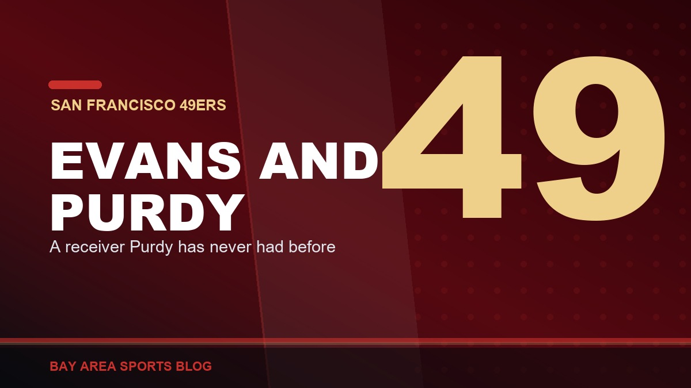
Mike Evans and Purdy: The Receiver He Has Never Had
Ten straight thousand yard seasons, a six foot five catch radius, and a quarterback who has never thrown to anything like it. Here is why Niner Nation cannot stop talking about this pairing.
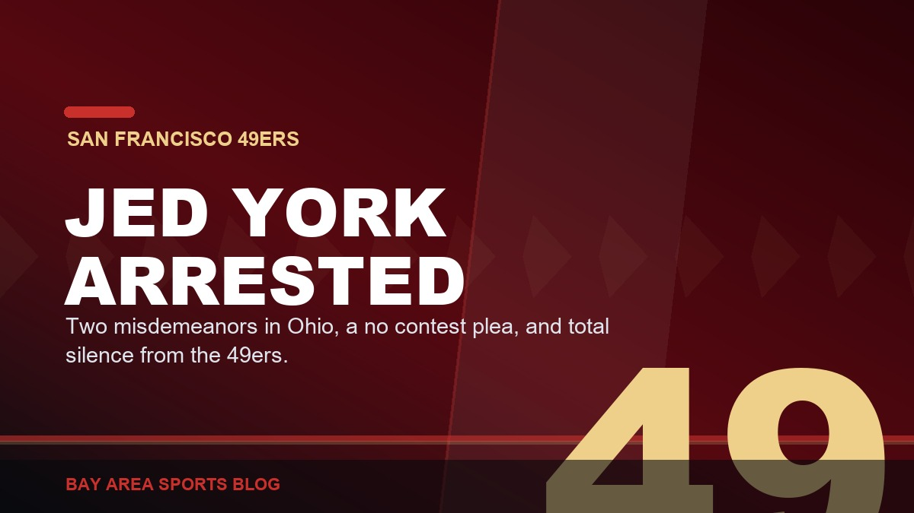
Jed York Got Arrested in Ohio and the 49ers Have Said Nothing
Arrested Sunday morning by a human trafficking task force, a no contest plea Monday, two misdemeanor convictions, and total silence from the team two weeks before the opener.

49ers 41, Chargers 17: The Best Night of the Summer
49ers 41, Chargers 17 at SoFi: Jacob Cowing took a punt 83 yards, the run game piled up 146, and San Francisco led Harbaugh's Chargers 20 to 3 at the half.

McCaffrey Still Is Not Practicing, and It Might Not Be a Muscle
No injury, no explanation, and three other running backs around the league just got paid. Nick Bosa has not been out there either.

They Took Aiyuk's Locker Out. That Is How You Know It Is Over.
His stall sat empty through an entire season and nobody touched it. Now it is gone, and a franchise that never announces anything just announced everything.

Harbaugh Comes Back Thursday, and Kittle Sounds Like Himself
The 49ers are at SoFi on Thursday night against the man who dragged this franchise back to life and then got run out of the building. And the best news of the week has nothing to do with him.

The Niners Finally Have the Right Mix of Veterans and Kids
A championship core in its prime, veterans on short money, and young players who actually produce. The last few draft classes are the reason this roster finally has depth.

Everybody Laughed at the Niners for Taking Stribling. They Are Not Laughing Now.
Draft night called it a reach and handed out C grades. One camp and one preseason game later the kid looks like the best rookie receiver in football.

Kyle Shanahan Needs to Win the Ring This Year. Say It Out Loud.
Year ten. Two Super Bowls lost, both to the same team. The roster is built, Purdy is peaking, Deebo and Evans are on short deals, and the excuse supply has finally run out.

The 49ers Sat Everybody and Lost by Six. The Raiders Played Everybody and Lost by Thirteen.
Shanahan hid every starter in a 19-13 loss to Tennessee, Rourke went 12-of-14 and Stribling caught seven, and the Raiders played Cousins and the No. 1 pick and still lost 27-14 at home.

The 49ers Waived Junior Bergen Again, and Kept the Left-Footed Punter
Three names off the ninety the day before the preseason opener, and three one-year deals in their place. Nobody created space. Everybody got swapped.

The 49ers Are Down Four Running Backs, Bosa Is Sore, and the Only Good News Is George Kittle
McCaffrey sat out with tightness, the three backs behind him are hurt, the team auditioned strangers on a Monday, and Bosa has not been in pads in a week.

The 49ers Defense Won Saturday, and Shanahan Is Coaching the Preseason Opener
The defense got the better of Purdy, Shanahan watched from behind the sunglasses, and he is running the sideline himself against Tennessee on Thursday.
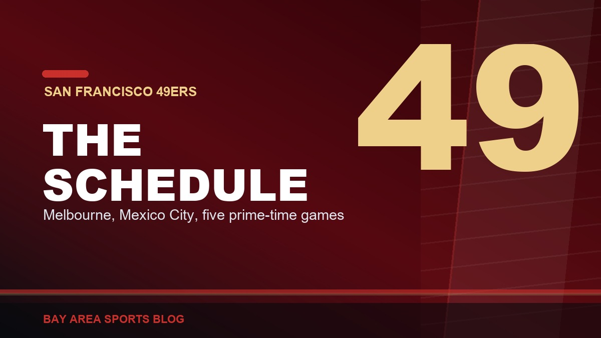
The 2026 49ers Schedule, Week by Week
The 2026 49ers schedule with the structure that matters: the Melbourne opener, the Mexico City game, five prime-time slots, and our coverage of each week.
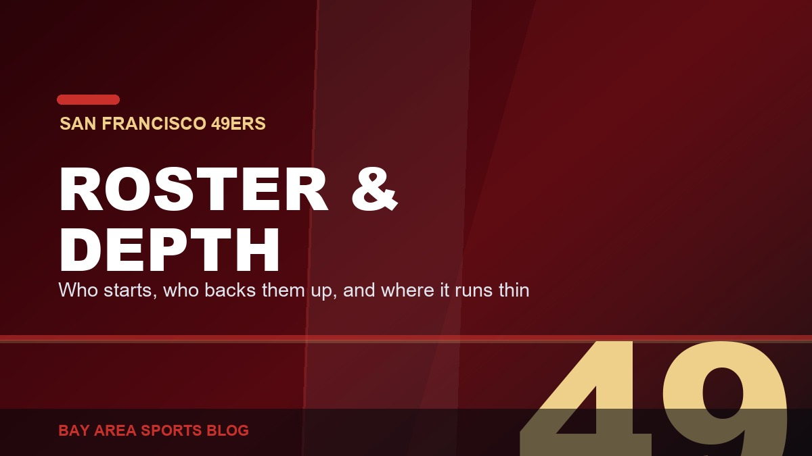
The 2026 49ers Roster and Depth Chart, Position by Position
A position-by-position look at the 2026 49ers roster: starters, key backups, the injury situation, and where the depth actually runs out.

The 2026 49ers: Roster, Schedule, and the Questions That Decide It
A structural preview of the 2026 49ers: the offense, the defence, the coaching, the schedule, and the four questions that actually decide the year.

Where Brock Purdy Actually Ranks, and What He Can Still Reach
A running look at where Brock Purdy sits historically: career passer rating, the records in reach, and the milestones that are realistic rather than hype.

Candlestick Park: The Wind, The Catch, and the End of the Stick
Fifty-five years on the windiest point in San Francisco, one earthquake, the Beatles’ last concert, and the site today.
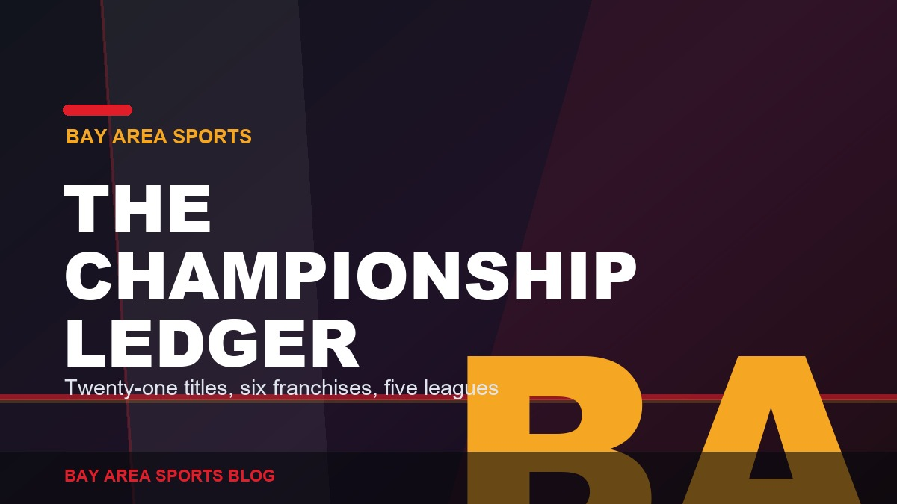
Every Bay Area Championship, Team by Team
Twenty-one titles, six franchises, five leagues, with the years, the decades, and the ones that do not count.

The NFL Is Opening the 49ers Season in Melbourne. Really.
The 49ers open 2026 against the Rams at the Melbourne Cricket Ground, the NFL's first regular season game in Australia. What that costs in Week 1.

Brock Purdy Is 147 Passes From Being the Most Efficient Quarterback in NFL History. Nobody Wants to Say It Out Loud.
A 104.0 career passer rating against an all-time record of 102.2, and he is 147 attempts, five games, from qualifying. The last pick in the draft is about to own the record book.

Purdy Is Throwing 70-Yard Touchdowns to Guys You Have Never Heard Of, and It Is Getting Ridiculous
A pair of 70-yard scores, a deep touchdown to a receiver who signed less than 24 hours earlier, and 24-of-28 over two practices, with five receivers hurt.

They Finally Gave Brock Purdy a Fight. He Won It Going Away.
The most competitive practice of camp, picks, punch-outs, a defense that finally punched back, and Purdy went 12-of-17 on 32 team snaps throwing to guys signed off the street.

Four Signings in a Week: Okoronkwo, Irwin, Deguara, Hodge, and a Roster Held Together With Tape
A Super Bowl edge rusher off a torn triceps, a Stanford kid coming home, a blocking tight end and a Pro Bowl gunner. Every move makes sense. Needing all four in August is the problem.

Brock Purdy Is Carving Up Training Camp. Twenty Guys Watched Him Do It From the Sideline.
13-of-14 in team drills, three straight red zone touchdowns and a Dougie in the end zone. On the same field, twenty players were unavailable. Both things are true.

The 49ers Signed KhaDarel Hodge, and That Tells You Everything About This Receiver Room
A 31-year-old Pro Bowl gunner with three catches last season and Raheem Morris ties. Fine player, no complaints. But it is August fifth and we are already signing bodies.

The 49ers Love Raheem Morris, and It Is Because He Lets Them Play Football
Five-down looks, new coverages, Warner and Greenlaw yelling at each other again, and a coordinator who tells this defense to go play instead of go think. It is the one good thing at this camp.

Purdy Is Ripping It in Camp, and That Throw to Demarcus Robinson Was a Dime
Over two defenders, back of the end zone, dropped in a bucket. Brock is playing fast and free again, and D-Rob has been the quiet best story of camp. Now just stay healthy.

It Is August and the 49ers Are Already Hurt. Again.
Pearsall out for the year, Kittle and Mykel Williams on PUP, four receivers off the field on the same day, and half a defensive line on the report. Nobody has played a snap yet.

Ricky Pearsall Is Out for the Year, and This Kid Just Cannot Catch a Break
Season-ending IR, PCL surgery in the next couple of weeks, and a six-to-12-month road back. Pearsall still has not gotten one clean, healthy run at his career.

Kyle Shanahan Update: He's Turning the Corner, and Camp Is Feeling It
Pads are on, practices are getting physical, and the coach is closer to being fully back in the middle of it, less than three weeks removed from a serious car accident.

Dre Greenlaw Hit Too Hard on Day One of Pads, and Christian McCaffrey Still Calls Him His Favorite Player
Greenlaw came out flying on the first padded practice of camp, and McCaffrey wasn't thrilled to be on the wrong end of it. He's also said Greenlaw is his favorite player in the league. That's what real veteran leadership looks like.
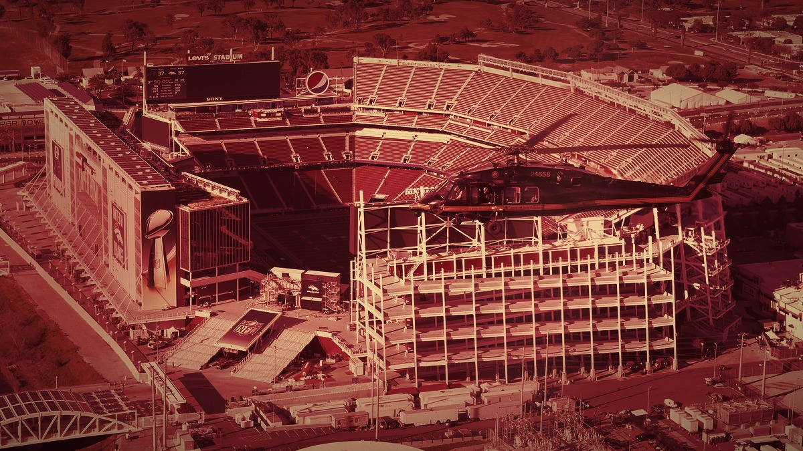
De'Zhaun Stribling Keeps Balling Out in Camp, and a Starting Job Is Starting to Look Inevitable
The rookie wide receiver isn't flashing for a day anymore, he's stacking good day after good day with Brock Purdy. At this rate, a Week 1 starting job looks like the floor, not the ceiling.
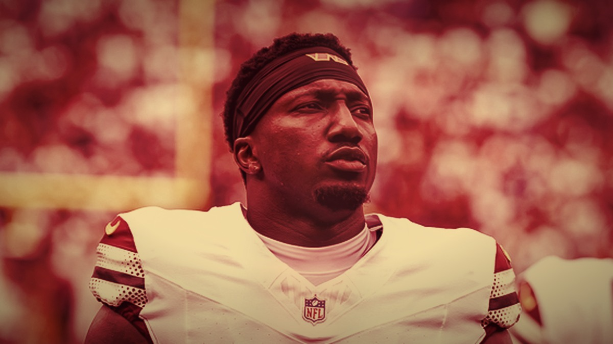
Deebo Samuel Is Coming Home: 49ers Bring Him Back on a One-Year, $7 Million Deal
A low-risk, high-reward reunion. Seven million dollars buys back one of the most uniquely dangerous weapons Kyle Shanahan's offense has ever had, on a roster that no longer needs him to be the whole answer.

Purdy and Rookie De'Zhaun Stribling Are Already Cooking, and This Niners Roster Is Loaded
Real chemistry with the rookie wideout, plus Evans and Kittle in the fold. On paper this is the deepest group Purdy has thrown to.

Kyle Shanahan's Car Accident Was Scarier Than We Knew, and Niner Nation Just Needs Him Healthy
A severe concussion, a broken nose, three broken ribs, a broken hand, and 40-plus stitches from the July 14 crash. He'll be limited early in camp while Chris Foerster picks up the load. Heal up, coach.

Jerry Rice Says This Is the Year the 49ers Break the Super Bowl Drought, and He Would Know
"I think this is the year for the Niners." At Lake Tahoe, the greatest 49er ever called his shot for 2026: the statement is to win it all. The drought started in January 1995, and he hung the last banner.
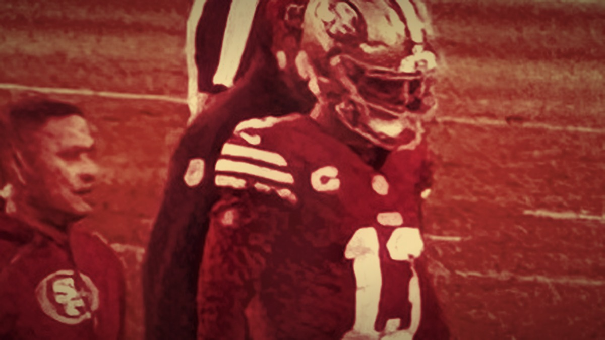
This Might Be the Best Team Kyle Shanahan Has Ever Had
Purdy, a healthy McCaffrey, Mike Evans and Christian Kirk, and Bosa and Warner back from injury. The deepest roster of the Shanahan era. If they stay healthy, this could finally be the year.
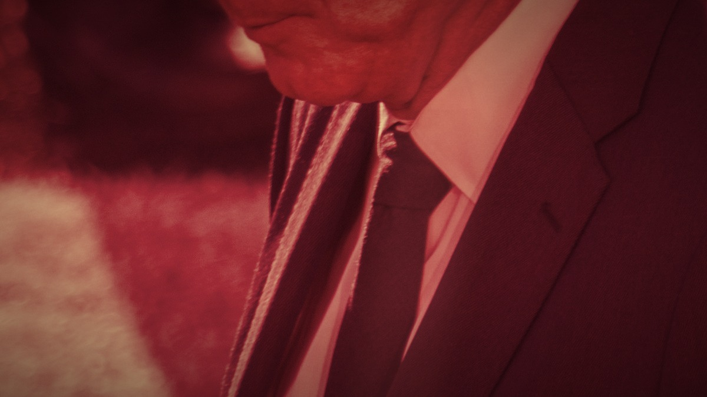
Two Hall of Famers, One Job: The Montana-Young Controversy and the Trade That Split the Bay
The 49ers had two HOF quarterbacks, then traded Joe Montana. How it happened, and why they were right.
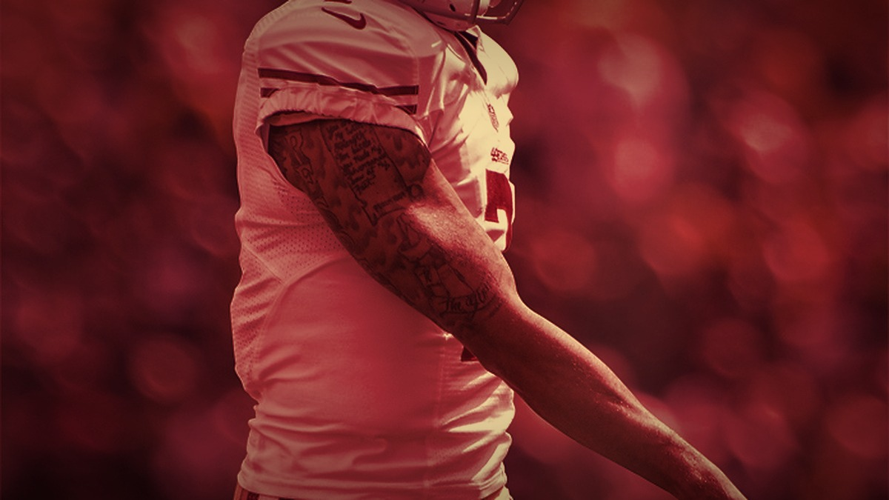
The NFL Blackballed Colin Kaepernick for Kneeling, and Everyone Knows It
A 29-year-old Super Bowl quarterback with a 16-to-4 touchdown-to-interception season, and thirty-two teams suddenly forgot how to sign a QB. It was never about talent.
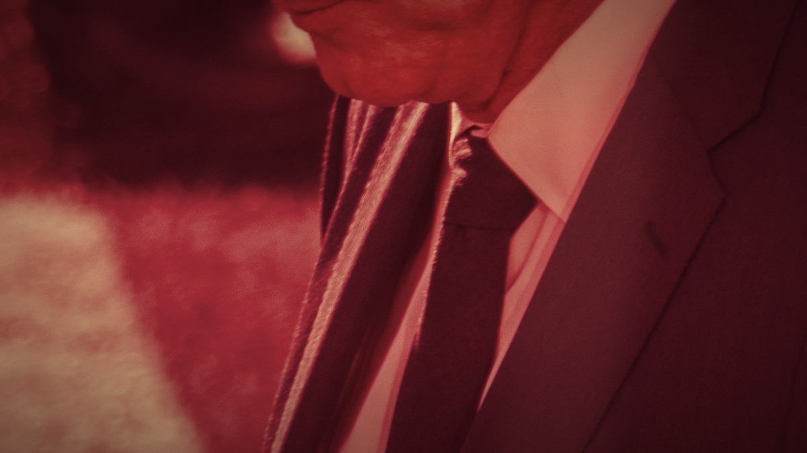
The Catch, and the Dynasty It Started
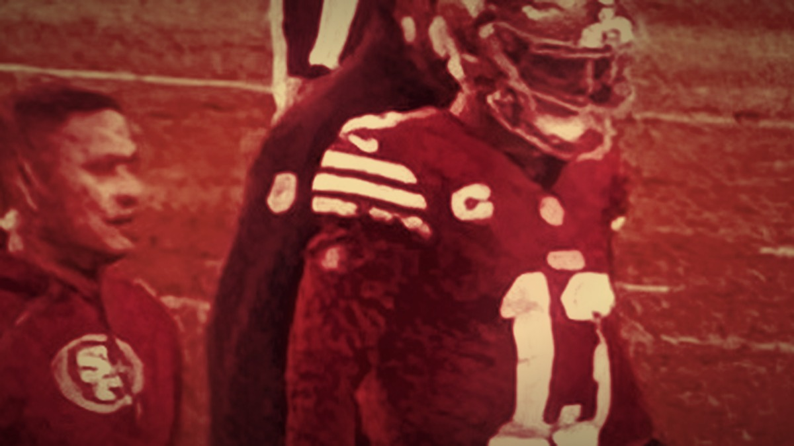
The 49ers Are Still Paying For Vegas
That overtime in Allegiant Stadium still shapes everything.
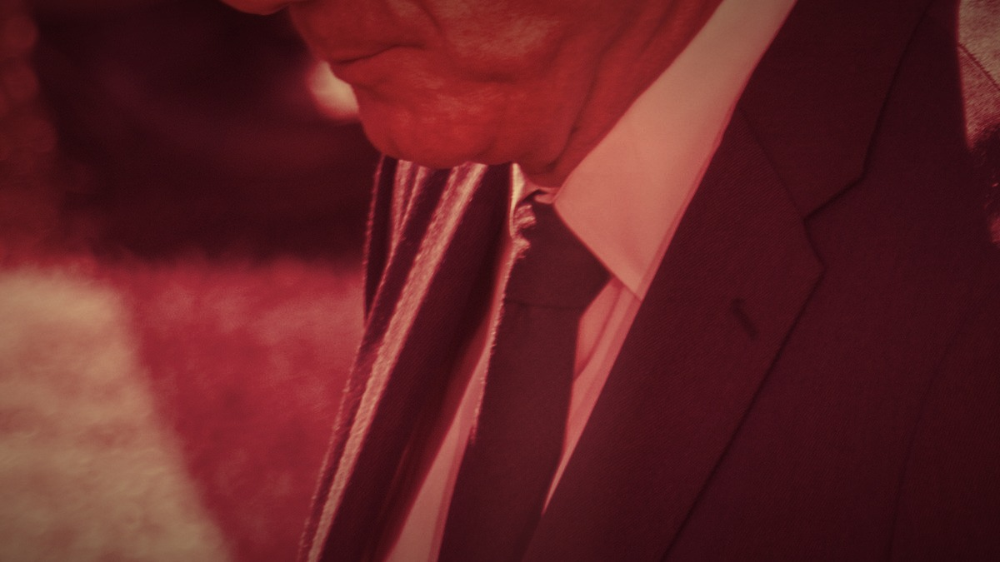
Team of the Decade: When the 49ers Ran the NFL
Five Super Bowls with Montana, Rice, and Young. The gold standard of a generation.
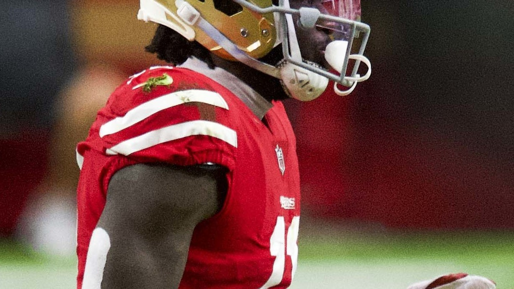
Brandon Aiyuk Has Gone Full Antonio Brown, and It's Hard to Watch
Aiyuk was one of the 49ers' cleanest success stories. Since the Super Bowl loss to Kansas City, it turned into something much stranger.